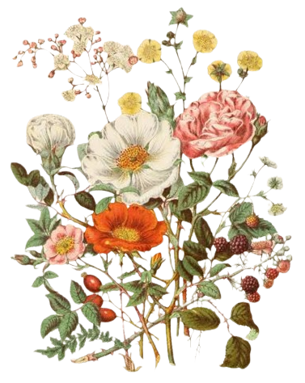
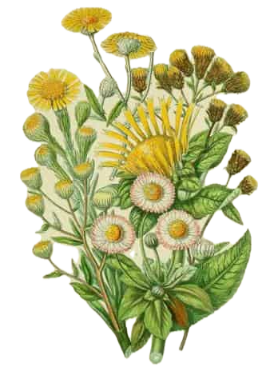

Botanical illustration is the artistic representation of plants, combining scientific accuracy with artistic expression. Artists use different mediums, including watercolor, ink, and pencil, to capture the unique structures, colors, and characteristics of plants, allowing viewers to appreciate their beauty and understand their biology.
Unlike ordinary nature artwork, botanical illustrations often combine artistic creativity with scientific observation. Each illustration aims to show the plant as accurately as possible while also highlighting its natural beauty.



Why Does It Matter?
Botanical illustration is more than just a way to create beautiful artwork. It has played an important role in science, education, and the preservation of plant knowledge.
Science and Identification
Detailed illustrations help scientists and researchers identify plant species by documenting their unique characteristics, structures, and features.
History and Preservation
Before photography became widely available, botanical illustrations were one of the primary ways to record and share information about plants. They continue to preserve knowledge of plant species across generations.
Art and Appreciation
Botanical illustration encourages people to slow down and observe nature more closely. It combines creativity and scientific accuracy, showing the beauty and complexity of the natural world.